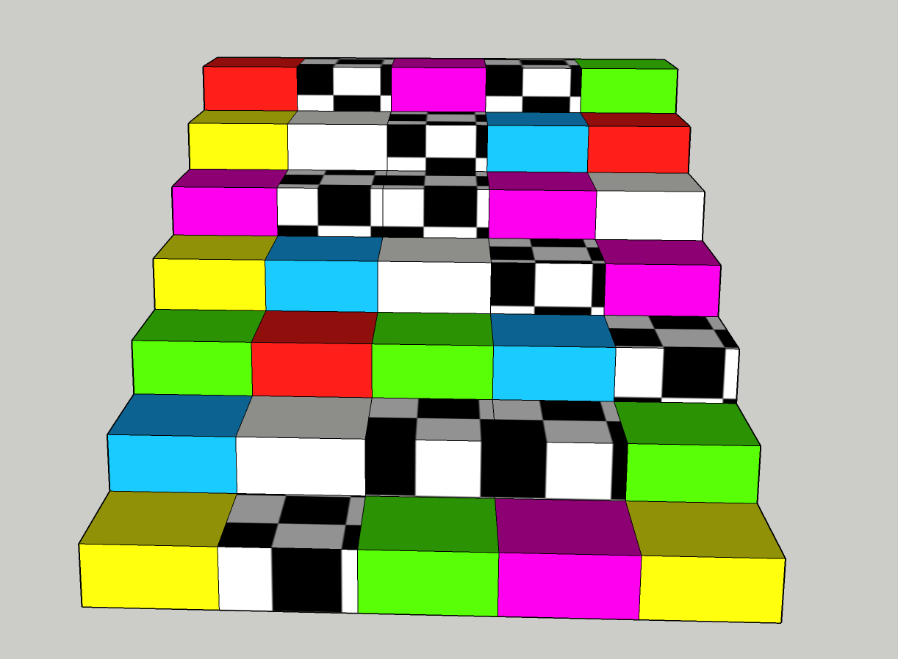
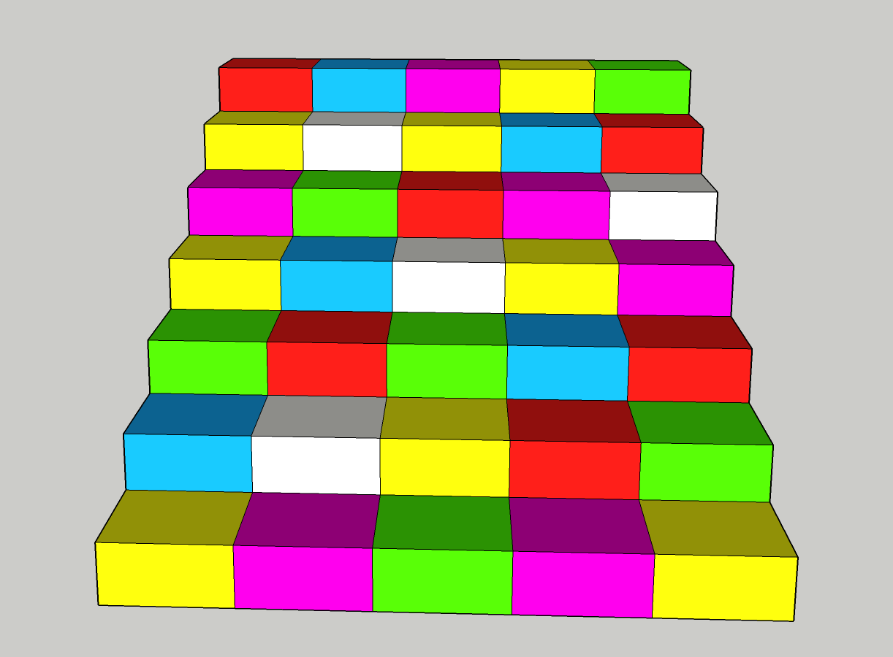

Als ik op school ben en naar mijn lokaal moet, neem ik 9 van de 10 keer de lift. Zelfs wanneer het maar twee verdiepingen zijn. Terwijl wanneer ik naar de sportschool ga ik op een nep trap ga lopen om fit te blijven. Wat als je het zo bekijkt natuurlijk onzin is. Maar hoe maak je traplopen nou aantrekkelijk. Om het traplopen aantrekkelijker te maken en ook nog eens een kleine oefening voor het brein te doen heb ik de memorie trap bedacht. De trap bestaat uit meerdere gekleurde blokken. Op sommige blokken verschijnen afbeeldingen die de speler moet onthouden. Hier heb je een aantal seconde voor. De laatste 3 seconden telt de trap af en verdwijnen de afbeeldingen. Nu is het aan jou om op de afbeeldingen te springen en op die manier zoveel mogelijk punten te verzamelen. Bovenaan word het aantal punten getoond. Het spel kan zowel individueel als samen gespeeld worden. Wanneer je het individueel speelt zal je voor jezelf simpelweg zoveel mogelijk punten willen halen. Wanneer je het samen speelt zal je de uiteindelijke punten met elkaar vergelijken en kijken wie de winnende speler is. De technologie geeft via licht de afbeeldingen op de trap weer, en met een sensor weet de technologie wanneer de gebruiker op de goede plek staat en dus een punt behaald. Op deze manier is traplopen een spelletje en is het leuke manier om jezelf tussen het bewegen van de een naar de andere les te vermaken.

